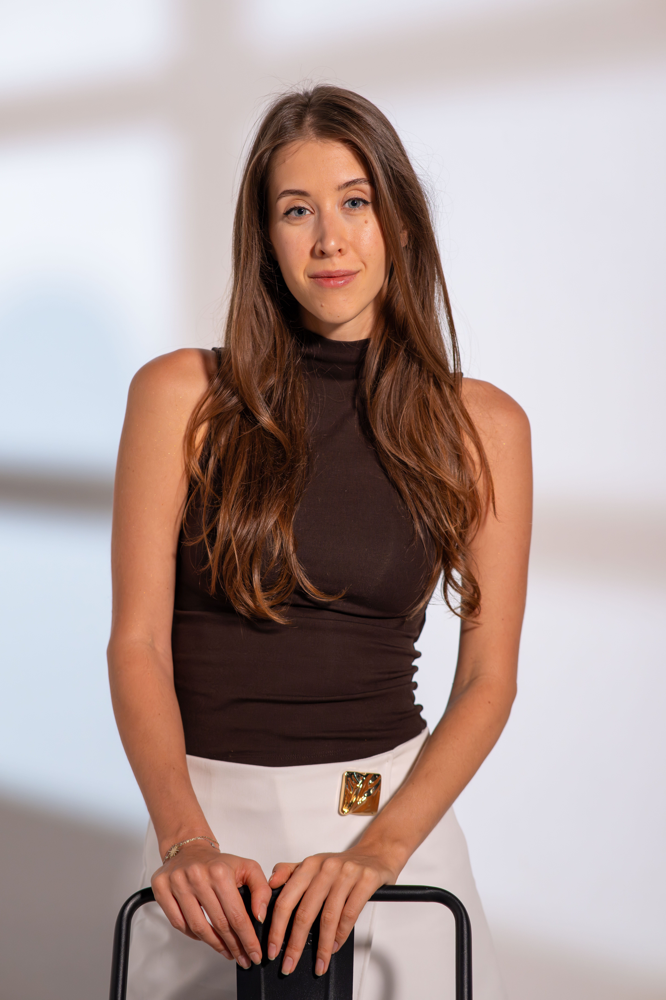

Расписание
Каждый четверг с 11:00 до 13:00 МСК. Старт — 24 сентября 2026 года. Продолжительность работы — 11 месяцев.
ФОРМАТ РАБОТЫ
Открыт набор в новую группу по четвергам с 24 сентября 2026 года.


О ГРУППЕ
Динамическая группа — это форма групповой терапии, где участники взаимодействуют в реальном времени, делясь мыслями и чувствами.
В этом формате можно пробовать новые способы быть с людьми в безопасной атмосфере, получать обратную связь и постепенно менять привычные паттерны.
Процесс не структурирован заранее: это позволяет гибко реагировать на возникающие темы и вопросы. Долгосрочное взаимодействие и поддержка помогают достигать глубоких и устойчивых изменений.
ЧТО ДАЁТ
Место, где можно выражать эмоции и работать над важными вопросами без страха осуждения.
Поддержка
Возможность встретить людей с похожими трудностями и почувствовать, что вы не одиноки.
Новые перспективы
Разные точки зрения и конструктивная обратная связь помогают увидеть свои ситуации по-новому.
Социальные навыки
Развитие навыков общения и самооценки в поддерживающей среде.
Безопасность
Пространство, где можно пробовать новые способы быть в отношениях.
ФОРМАТ И УСЛОВИЯ
Каждый четверг с 11:00 до 13:00 МСК. Старт — 24 сентября 2026 года. Продолжительность работы — 11 месяцев.
До 10 участников и два терапевта на каждой встрече. Важно присутствовать на большинстве встреч; пропущенные встречи оплачиваются.
Короткий личный видеозвонок на 10–30 минут, чтобы познакомиться, прояснить запрос и ответить на вопросы. Это не отбор.
Оставить заявку
3 500 ₽ за встречу. Оплата абонементом за 4 встречи вперёд: 14 000 ₽ / 160 €. Возможна оплата в рублях, евро или долларах.
ВЕДУЩИЕ
На каждой встрече работают два терапевта.
Ведущая группы
Психолог-консультант, групповой терапевт, парный психотерапевт; ведущая подкаста и автор книги «Чуть не развелись». Мама двоих детей.
Ведущая группы
Психолог, телесно-ориентированный психотерапевт, тренер психологических и групповых программ, супервизор, мастер спорта.
Если хочется присоединиться
к группе.